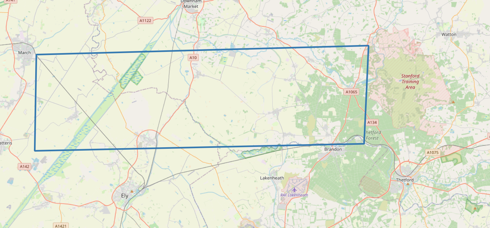
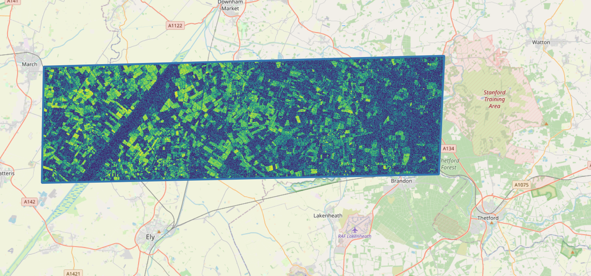
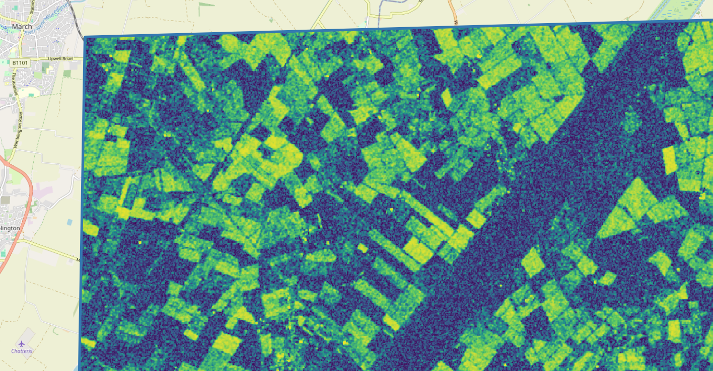

import logging
logging.basicConfig(level=logging.INFO)
from itertools import combinations
# general geospatial tools
import geopandas as gpd
import shapely
from shapely.geometry import shape
import folium
# eo-tools and related packages
import eo_tools as eo
from eo_tools.S1.process import process_insar
from eodag import EODataAccessGateway
import pyeodhUser Example: SAR Coherence
Description & purpose: This Notebook outlines a use case for generating Sentinel 1 SAR (Synthetic Aperture Radar) coherence imagery. It walks the user through the science and outlines how the eoap-gen tool has been used to create a workflow that is usable on the EODH.
Author(s): Alastair Graham, Dusan Figala
Date created: 2024-11-08
Date last modified: 2025-03-11
Licence: This file is licensed under Creative Commons Attribution-ShareAlike 4.0 International. Any included code is released using the BSD-2-Clause license.
Copyright (c) , All rights reserved.
Redistribution and use in source and binary forms, with or without modification, are permitted provided that the following conditions are met:
Redistributions of source code must retain the above copyright notice, this list of conditions and the following disclaimer. Redistributions in binary form must reproduce the above copyright notice, this list of conditions and the following disclaimer in the documentation and/or other materials provided with the distribution. THIS SOFTWARE IS PROVIDED BY THE COPYRIGHT HOLDERS AND CONTRIBUTORS “AS IS” AND ANY EXPRESS OR IMPLIED WARRANTIES, INCLUDING, BUT NOT LIMITED TO, THE IMPLIED WARRANTIES OF MERCHANTABILITY AND FITNESS FOR A PARTICULAR PURPOSE ARE DISCLAIMED. IN NO EVENT SHALL THE COPYRIGHT HOLDER OR CONTRIBUTORS BE LIABLE FOR ANY DIRECT, INDIRECT, INCIDENTAL, SPECIAL, EXEMPLARY, OR CONSEQUENTIAL DAMAGES (INCLUDING, BUT NOT LIMITED TO, PROCUREMENT OF SUBSTITUTE GOODS OR SERVICES; LOSS OF USE, DATA, OR PROFITS; OR BUSINESS INTERRUPTION) HOWEVER CAUSED AND ON ANY THEORY OF LIABILITY, WHETHER IN CONTRACT, STRICT LIABILITY, OR TORT (INCLUDING NEGLIGENCE OR OTHERWISE) ARISING IN ANY WAY OUT OF THE USE OF THIS SOFTWARE, EVEN IF ADVISED OF THE POSSIBILITY OF SUCH DAMAGE.
Background
A requirement to process coherence from Sentinel 1 data was articulated.
Coherence data are a measure of the similarity between two complex radar signals acquired over the same area. In this use case those radar signals are captured by the Sentinel-1 Synthetic Aperture Radar (SAR) sensor using its Single Look Complex (SLC) mode. Coherence is calculated by comparing the phase information of the radar signals across consecutive or closely spaced acquisitions. High coherence indicates strong similarity in phase, which typically occurs when the surface properties remain stable between acquisitions, such as in urban areas or bare soil. Conversely, low coherence suggests changes in the surface, such as vegetation growth, soil moisture variations, or physical displacement caused by events such as earthquakes or landslides. The coherence value, ranging between 0 and 1, provides valuable information about the temporal stability of the observed area.
Coherence data derived from Sentinel-1 SLC imagery are crucial in various remote sensing applications, including land-use classification, vegetation monitoring, and deformation analysis. In particular, coherence is a key component of interferometric SAR (InSAR) techniques, which rely on phase differences to measure ground displacement with millimeter precision. Coherence can be used to monitor dynamic changes in the environment, such as detecting deforestation, tracking agricultural practices, or studying snow cover variations. By leveraging Sentinel-1’s high spatial resolution, regular revisit times, and all-weather imaging capabilities, coherence data provide a robust tool for understanding and managing natural and human-induced changes on the Earth’s surface.
“The Sentinel 1 Level 1 SLC products are images in the slant range by azimuth imaging plane, in the image plane of satellite data acquisition. Each image pixel is represented by a complex (I and Q) magnitude value and therefore contains both amplitude and phase information. Each I and Q value is 16 bits per pixel. The processing for all SLC products results in a single look in each dimension using the full available signal bandwidth. The imagery is geo-referenced using orbit and attitude data from the satellite.” ref
Information on Sentinel 1 and the different products that are available at source can be found on the Copernicus Data Space Ecosystem (CDSE) website and here
The Scientific Process
Before creating a workflow on the EODH platform it was important to step through the scientific process to make sure that the correct tools and data were being considered. To create the coherence outputs we use a relatively new Python package called eo-tools which calls another powerful packaged called pygmtsar (see also https://insar.dev/).
As part of this discovery phase, and in line with the how-to tutorial on the eo-tools website, there is a need to access data on the CDSE. If you want to do this you will need a free account on that platform and will need to set up an eodag.yaml file as explained here.
The following tutorial will demonstrate how to process a single SLC pair.
First we need to import the required packages
Make sure that a suitable directory is set as the working directory for this exploratory work. Set the following for your system.
# Set download dirs
data_dir = "/home/al/Downloads/eotools"The first thing to do is set an Area of Interest (AOI). The simplest way to do this is to supply a geojson file and we have provided in the repository a small area near Thetford, UK.
# You can supply an suitable geojson file
# AOI around Thetford
file_aoi = f"data/thetfordaoi.geojson"
shp = gpd.read_file(file_aoi).geometry[0]
# Alternatively you can set the AOI in code using the following format. The numbers are in decimal degrees and should be set for your AOI
# bbox = {
# "lonmin": 0.1,
# "latmin": 52.1,
# "lonmax": 0.9,
# "latmax": 52.9,
# }
# shp = shapely.box(bbox["lonmin"], bbox["latmin"], bbox["lonmax"], bbox["latmax"])Scientific method
We start with searching the data on Copernicus Data Space Ecosystem.
Need to create an access point to do the search.
dag = EODataAccessGateway()
# make sure cop_dataspace will be used
dag.set_preferred_provider("cop_dataspace")
logging.basicConfig(level=logging.INFO)INFO:eodag.config:Loading user configuration from: /home/al/.config/eodag/eodag.yml
INFO:eodag.core:usgs: provider needing auth for search has been pruned because no crendentials could be found
INFO:eodag.core:aws_eos: provider needing auth for search has been pruned because no crendentials could be found
INFO:eodag.core:meteoblue: provider needing auth for search has been pruned because no crendentials could be found
INFO:eodag.core:hydroweb_next: provider needing auth for search has been pruned because no crendentials could be found
INFO:eodag.core:wekeo: provider needing auth for search has been pruned because no crendentials could be found
INFO:eodag.core:creodias_s3: provider needing auth for search has been pruned because no crendentials could be found
INFO:eodag.core:Locations configuration loaded from /home/al/.config/eodag/locations.yml# Run search using the bbox set earlier
search_criteria = {
"productType": "S1_SAR_SLC",
"start": "2023-09-03",
"end": "2023-09-17",
"geom": shp,
}
results, _ = dag.search(**search_criteria)INFO:eodag.core:Searching product type 'S1_SAR_SLC' on provider: cop_dataspace
INFO:eodag.search.qssearch:Sending search request: http://catalogue.dataspace.copernicus.eu/resto/api/collections/Sentinel1/search.json?startDate=2023-09-03&completionDate=2023-09-17&geometry=POLYGON ((0.1085 52.5485, 0.6857 52.5580, 0.6778 52.4539, 0.1057 52.4464, 0.1085 52.5485))&productType=SLC&maxRecords=20&page=1&exactCount=1
INFO:eodag.core:Found 5 result(s) on provider 'cop_dataspace'If we want to we can display all of the returned image file outlines on a map
eo.util.explore_products(results, shp)Make this Notebook Trusted to load map: File -> Trust Notebook
We are only interested in image pairs. The S1 SLC file name doesn’t make it clear which these are so the following code finds image footprints with 98% overlap
# Find overlaps
data = []
for item in results:
id = item.properties["id"]
geom = shape(item.geometry)
data.append({"id": id, "geometry": geom})
gdf = gpd.GeoDataFrame(data, crs="EPSG:4326") # Assuming WGS84
# 98% overlap
threshold = 0.98
overlaps = []
for (idx1, row1), (idx2, row2) in combinations(gdf.iterrows(), 2):
intersection = row1["geometry"].intersection(row2["geometry"])
if not intersection.is_empty:
# Calculate overlap ratio as the area of intersection divided by the area of the smaller polygon
overlap_ratio = intersection.area / min(
row1["geometry"].area, row2["geometry"].area
)
if overlap_ratio >= threshold:
overlaps.append((row1["id"], row2["id"], overlap_ratio))
overlap_ids = [entry[:-1] for entry in overlaps]
overlap_ids[('S1A_IW_SLC__1SDV_20230904T174209_20230904T174236_050181_060A2D_E88F',
'S1A_IW_SLC__1SDV_20230916T174209_20230916T174236_050356_061016_8033')]The data files are large (8GB). when running this locally use a tool such as wget to download the Sentinel 1 image pair that you want
# Set download dirs
ids = [
"S1A_IW_SLC__1SDV_20241016T174206_20241016T174233_056131_06DE72_1B0C",
"S1A_IW_SLC__1SDV_20241028T174206_20241028T174233_056306_06E564_F046"
]
#"S1A_IW_SLC__1SDV_20230904T174209_20230904T174236_050181_060A2D_E88F",
#"S1A_IW_SLC__1SDV_20230916T174209_20230916T174236_050356_061016_8033",
#]
primary_dir = f"{data_dir}/{ids[0]}.zip"
secondary_dir = f"{data_dir}/{ids[1]}.zip"
outputs_prefix = f"{data_dir}/res/test-full-processor"The next cell runs eo-tools on the SAR SLC data pair. There are a multitude of configuration parameters but the most important one for this application is to ensure that write_coherence is set to True. This will generate an image of coherence in the project path set earlier in the Notebook. To effectively set the remainder of the parameters you will need some level of competence in SAR interferometry. For the purposes of this demonstration we leave them on the default values.
out_dir = process_insar(
dir_prm=primary_dir,
dir_sec=secondary_dir,
outputs_prefix=outputs_prefix,
aoi_name=None,
shp=shp,
pol="vv",
subswaths=["IW1", "IW2", "IW3"],
write_coherence=True,
write_interferogram=True,
write_primary_amplitude=False,
write_secondary_amplitude=False,
apply_fast_esd=True,
dem_upsampling=1.8,
dem_force_download=False,
dem_buffer_arc_sec=40,
boxcar_coherence=[3, 3],
filter_ifg=True,
multilook=[1, 4],
warp_kernel="bicubic",
clip_to_shape=True,
)INFO:eo_tools.S1.process:---- Processing subswath IW1 in VV polarization
INFO:eo_tools.S1.core:S1IWSwath Initialization:
INFO:eo_tools.S1.core:- Read metadata file /home/al/Downloads/eotools/S1A_IW_SLC__1SDV_20241016T174206_20241016T174233_056131_06DE72_1B0C.zip/S1A_IW_SLC__1SDV_20241016T174206_20241016T174233_056131_06DE72_1B0C.SAFE/annotation/s1a-iw1-slc-vv-20241016t174207-20241016t174232-056131-06de72-004.xml
INFO:eo_tools.S1.core:- Read calibration file /home/al/Downloads/eotools/S1A_IW_SLC__1SDV_20241016T174206_20241016T174233_056131_06DE72_1B0C.zip/S1A_IW_SLC__1SDV_20241016T174206_20241016T174233_056131_06DE72_1B0C.SAFE/annotation/calibration/calibration-s1a-iw1-slc-vv-20241016t174207-20241016t174232-056131-06de72-004.xml
INFO:eo_tools.S1.core:- Set up raster path zip:///home/al/Downloads/eotools/S1A_IW_SLC__1SDV_20241016T174206_20241016T174233_056131_06DE72_1B0C.zip/S1A_IW_SLC__1SDV_20241016T174206_20241016T174233_056131_06DE72_1B0C.SAFE/measurement/s1a-iw1-slc-vv-20241016t174207-20241016t174232-056131-06de72-004.tiff
INFO:eo_tools.S1.core:- Look for available OSV (Orbit State Vectors)
INFO:eo_tools.S1.core:-- Precise orbit found
INFO:eo_tools.S1.core:S1IWSwath Initialization:
INFO:eo_tools.S1.core:- Read metadata file /home/al/Downloads/eotools/S1A_IW_SLC__1SDV_20241028T174206_20241028T174233_056306_06E564_F046.zip/S1A_IW_SLC__1SDV_20241028T174206_20241028T174233_056306_06E564_F046.SAFE/annotation/s1a-iw1-slc-vv-20241028t174207-20241028t174232-056306-06e564-004.xml
INFO:eo_tools.S1.core:- Read calibration file /home/al/Downloads/eotools/S1A_IW_SLC__1SDV_20241028T174206_20241028T174233_056306_06E564_F046.zip/S1A_IW_SLC__1SDV_20241028T174206_20241028T174233_056306_06E564_F046.SAFE/annotation/calibration/calibration-s1a-iw1-slc-vv-20241028t174207-20241028t174232-056306-06e564-004.xml
INFO:eo_tools.S1.core:- Set up raster path zip:///home/al/Downloads/eotools/S1A_IW_SLC__1SDV_20241028T174206_20241028T174233_056306_06E564_F046.zip/S1A_IW_SLC__1SDV_20241028T174206_20241028T174233_056306_06E564_F046.SAFE/measurement/s1a-iw1-slc-vv-20241028t174207-20241028t174232-056306-06e564-004.tiff
INFO:eo_tools.S1.core:- Look for available OSV (Orbit State Vectors)
INFO:eo_tools.S1.core:-- Precise orbit found
INFO:eo_tools.S1.core:--DEM already on disk
INFO:eo_tools.S1.process:---- Processing burst 3 ----
INFO:eo_tools.S1.core:Extract DEM coordinates
INFO:eo_tools.S1.core:Convert latitude, longitude & altitude to ECEF x, y & z
INFO:eo_tools.S1.core:Interpolate orbit
INFO:eo_tools.S1.core:Range-Doppler terrain correction (LUT computation)
INFO:eo_tools.S1.core:Extract DEM coordinates
INFO:eo_tools.S1.core:Convert latitude, longitude & altitude to ECEF x, y & z
INFO:eo_tools.S1.core:Interpolate orbit
INFO:eo_tools.S1.core:Range-Doppler terrain correction (LUT computation)
INFO:eo_tools.S1.core:Compute beta nought calibration factor.
INFO:eo_tools.S1.core:Compute beta nought calibration factor.
INFO:eo_tools.S1.process:Apply calibration factor
INFO:eo_tools.S1.core:Compute TOPS deramping phase
INFO:eo_tools.S1.process:Apply phase deramping
INFO:eo_tools.S1.core:Project secondary coordinates to primary grid.
INFO:eo_tools.S1.core:Warp secondary to primary geometry.
INFO:eo_tools.S1.core:Warp secondary to primary geometry.
INFO:eo_tools.S1.process:Apply phase reramping
INFO:eo_tools.S1.core:Compute topographic phase
INFO:eo_tools.S1.core:Compute topographic phase
INFO:eo_tools.S1.process:Apply topographic phase removal
INFO:eo_tools.auxils:Removing /home/al/Downloads/eotools/res/test-full-processor/S1_InSAR_2024-10-16-174206__2024-10-28-174206/sar/dem_burst.vrt
INFO:eo_tools.S1.process:Cleaning temporary files
INFO:eo_tools.S1.process:---- Interferometric outputs for VV IW1
INFO:eo_tools.S1.process:Compute coherence & interferogram
INFO:eo_tools.S1.process:---- Interferometric outputs for VV IW2
INFO:eo_tools.S1.process:Compute coherence & interferogram
INFO:eo_tools.S1.process:Geocode file coh_vv_iw1.tif.
INFO:eo_tools.S1.process:Project image with the lookup table.
INFO:eo_tools.S1.process:Geocode file coh_vv_iw2.tif.
INFO:eo_tools.S1.process:Project image with the lookup table.
INFO:eo_tools.S1.process:Merge file coh_vv.tif
INFO:eo_tools.auxils:Removing /home/al/Downloads/eotools/res/test-full-processor/S1_InSAR_2024-10-16-174206__2024-10-28-174206/sar/coh_vv_iw1_geo.tif
INFO:eo_tools.auxils:Removing /home/al/Downloads/eotools/res/test-full-processor/S1_InSAR_2024-10-16-174206__2024-10-28-174206/sar/coh_vv_iw2_geo.tif
INFO:eo_tools.S1.process:Geocode file ifg_vv_iw1.tif.
INFO:eo_tools.S1.process:Project image with the lookup table.
INFO:eo_tools.S1.process:Geocode file ifg_vv_iw2.tif.
INFO:eo_tools.S1.process:Project image with the lookup table.
INFO:eo_tools.S1.process:Merge file phi_vv.tif
INFO:eo_tools.auxils:Removing /home/al/Downloads/eotools/res/test-full-processor/S1_InSAR_2024-10-16-174206__2024-10-28-174206/sar/phi_vv_iw1_geo.tif
INFO:eo_tools.auxils:Removing /home/al/Downloads/eotools/res/test-full-processor/S1_InSAR_2024-10-16-174206__2024-10-28-174206/sar/phi_vv_iw2_geo.tifOutputs
The following figures show, in order: * The AOI * This covers an area between the Fenland town of March to the west and Thetford Forest to the east. The 100 Foot Drain complex is covered in the western portion of the AOI * The full coherence image * Low coherence values are represented in dark blue and high values in yellow, with a gradient between them. * A portion of the coherence image near the town of March



Using pyeodh
We can use pyeodh to find data on the Hub. The following cells demonstrate how this might be done.
# Connect to the Hub
# base_url can be changed to optionally specify a different server, such as test.eodatahub
client = pyeodh.Client(
base_url="https://staging.eodatahub.org.uk"
).get_catalog_service()The following cell prints out the available properties for each item. It is possible to ammend this to print specific properties for each item (up to the specified limit).
# Now we want to access the first few items
sentinel = client.get_catalog("supported-datasets/catalogs/ceda-stac-catalogue").get_collection('sentinel1')
sentinel.get_items()
lim = 1 # increase this number to access more items
for i, item in enumerate(sentinel.get_items()):
if i >= lim:
break
print(item.id, item.properties) # comment this line and uncomment the next to just print id and datetime for each item
# print(item.id, item.properties['datetime']) neodc.sentinel1a.data.IW.L1_SLC.IPF_v3.2024.10.31.S1A_IW_SLC__1SDV_20241031T233334_20241031T233407_056353_06E745_B4ED {'datetime': '2024-10-31T23:33:50Z', 'created': '2024-11-19T13:58:04.869039Z', 'updated': '2024-11-19T13:58:04.869039Z', 'start_datetime': '2024-10-31T23:33:34Z', 'end_datetime': '2024-10-31T23:34:07Z', 'platform': 'sentinel1a', 'instrument_mode': 'IW', 'processing_level': 'L1', 'product_type': 'SLC', 'processing_software': 'IPF', 'product_version': 'v3', 'orbit': '056353', 'Instrument Family Name': 'Synthetic Aperture Radar', 'Instrument Family Name Abbreviation': 'SAR', 'Platform Number': 'A', 'NSSDC Identifier': '2014-016A', 'Start Relative Orbit Number': '106', 'Start Orbit Number': '56353', 'Instrument Mode': 'IW', 'Slice Number': '18', 'Total Slices': '18', 'Polarisation': ['VV', 'VH'], 'Processing Version': '003.80', 'Orbit Direction': 'DESCENDING', 'EPSG': '4326', 'instance_id': 'neodc.sentinel1a.data.IW.L1_SLC.IPF_v3.2024.10.31.S1A_IW_SLC__1SDV_20241031T233334_20241031T233407_056353_06E745_B4ED'}Now we want to search for SAR data that fall across the Thetford site for a given timeframe.
# To find specific imagery for the Thetford site we need to add the intersects parameter. We set this to be our AOI point.
thet_pnt = shapely.Point(0.6715892933273722, 52.414471075812315) # a site near Thetford
# Set the date range as you need
items = client.search(
collections=['sentinel1'],
catalog_paths=["supported-datasets/catalogs/ceda-stac-catalogue"],
intersects=thet_pnt,
query=[
'start_datetime>=2024-10-16',
'end_datetime<=2024-11-30',
],
)
# We can then count the number of items returned by the search
#print('Number of items found: ', items.total_count)
total_items = sum(1 for _ in items)
print(f"Total items: {total_items}")Total items: 9The next cell creates a formatted list of id, bounding box and a data URL for each of the items.
It then creates a Shapely polygon and uses this to look for other images that have 98% overlap
# Create the formatted list
data = [
(item.id,
item.bbox,
item.assets.get("data_zip")
) for item in items
]
# Convert to dictionary with shapely boxes
bboxes = {rec[0]: shapely.geometry.box(*rec[1]) for rec in data}
# Find IDs where overlap is at least 90%
overlapping_ids = set()
for id1, bbox1 in bboxes.items():
for id2, bbox2 in bboxes.items():
if id1 != id2: # Avoid self-comparison
intersection_area = bbox1.intersection(bbox2).area
min_area = min(bbox1.area, bbox2.area)
if min_area > 0 and (intersection_area / min_area) >= 0.98:
overlapping_ids.add(id1)
print("IDs with at least 98% overlap:", overlapping_ids)IDs with at least 98% overlap: {'neodc.sentinel1a.data.IW.L1_SLC.IPF_v3.2024.10.18.S1A_IW_SLC__1SDV_20241018T055407_20241018T055442_056153_06DF4E_19D4', 'neodc.sentinel1a.data.IW.L1_SLC.IPF_v3.2024.10.18.S1A_IW_SLC__1SDV_20241018T061507_20241018T061535_056153_06DF50_619B', 'neodc.sentinel1a.data.IW.L1_SLC.IPF_v3.2024.10.30.S1A_IW_SLC__1SDV_20241030T055407_20241030T055442_056328_06E63C_37A1', 'neodc.sentinel1a.data.IW.L1_SLC.IPF_v3.2024.10.26.S1A_IW_SLC__1SDV_20241026T181923_20241026T181948_056277_06E441_9ADB', 'neodc.sentinel1a.data.IW.L1_SLC.IPF_v3.2024.10.25.S1A_IW_SLC__1SDV_20241025T060655_20241025T060722_056255_06E360_E4C0', 'neodc.sentinel1a.data.IW.L1_SLC.IPF_v3.2024.10.30.S1A_IW_SLC__1SDV_20241030T061507_20241030T061534_056328_06E63E_21E9', 'neodc.sentinel1a.data.IW.L1_SLC.IPF_v3.2024.10.28.S1A_IW_SLC__1SDV_20241028T174206_20241028T174233_056306_06E564_F046', 'neodc.sentinel1a.data.IW.L1_SLC.IPF_v3.2024.10.16.S1A_IW_SLC__1SDV_20241016T174206_20241016T174233_056131_06DE72_1B0C'}Finally, we want to plot the overlapping items on a map. We also create a FeatureGroup to allow the bounding boxes to be swithched on and off: this helps us understand which images are direct image pairs. as before, we need to make a note of those image pairs and then run the print(data) cell to find the corresponding URL to the data.
# Compute the center of the first bounding box for map initialization
first_bbox = list(bboxes.values())[0]
center = first_bbox.centroid.y, first_bbox.centroid.x # (lat, lon)
# Create a folium map centered on the first bbox
m = folium.Map(location=center, zoom_start=6)
# Add each bbox as a separate FeatureGroup (allows toggling)
for item_id, bbox in bboxes.items():
feature_group = folium.FeatureGroup(name=f"Polygon {item_id}") # Group for toggling
coords = [(y, x) for x, y in bbox.exterior.coords] # Convert (x, y) → (lat, lon)
folium.Polygon(
locations=coords,
color="blue",
fill=True,
fill_opacity=0.4,
popup=item_id
).add_to(feature_group)
feature_group.add_to(m) # Add the group to the map
# Add LayerControl to allow toggling
folium.LayerControl().add_to(m)
# Display the map
mMake this Notebook Trusted to load map: File -> Trust Notebook
print(data)[('neodc.sentinel1a.data.IW.L1_SLC.IPF_v3.2024.10.30.S1A_IW_SLC__1SDV_20241030T061507_20241030T061534_056328_06E63E_21E9', [-2.245931, 51.279499, 2.000001, 53.306957], <Asset href=https://dap.ceda.ac.uk/neodc/sentinel1a/data/IW/L1_SLC/IPF_v3/2024/10/30/S1A_IW_SLC__1SDV_20241030T061507_20241030T061534_056328_06E63E_21E9.zip>), ('neodc.sentinel1a.data.IW.L1_SLC.IPF_v3.2024.10.30.S1A_IW_SLC__1SDV_20241030T055407_20241030T055442_056328_06E63C_37A1', [-179.947861, 50.773228, 177.047455, 53.279991], <Asset href=https://dap.ceda.ac.uk/neodc/sentinel1a/data/IW/L1_SLC/IPF_v3/2024/10/30/S1A_IW_SLC__1SDV_20241030T055407_20241030T055442_056328_06E63C_37A1.zip>), ('neodc.sentinel1a.data.IW.L1_SLC.IPF_v3.2024.10.28.S1A_IW_SLC__1SDV_20241028T174206_20241028T174233_056306_06E564_F046', [-0.871057, 51.935623, 3.405478, 53.953266], <Asset href=https://dap.ceda.ac.uk/neodc/sentinel1a/data/IW/L1_SLC/IPF_v3/2024/10/28/S1A_IW_SLC__1SDV_20241028T174206_20241028T174233_056306_06E564_F046.zip>), ('neodc.sentinel1a.data.IW.L1_SLC.IPF_v3.2024.10.26.S1A_IW_SLC__1SDV_20241026T181923_20241026T181948_056277_06E441_9ADB', [-179.779007, 50.908009, 177.040146, 52.75478], <Asset href=https://dap.ceda.ac.uk/neodc/sentinel1a/data/IW/L1_SLC/IPF_v3/2024/10/26/S1A_IW_SLC__1SDV_20241026T181923_20241026T181948_056277_06E441_9ADB.zip>), ('neodc.sentinel1a.data.IW.L1_SLC.IPF_v3.2024.10.25.S1A_IW_SLC__1SDV_20241025T060655_20241025T060722_056255_06E360_E4C0', [-0.213998, 51.158131, 4.020997, 53.186623], <Asset href=https://dap.ceda.ac.uk/neodc/sentinel1a/data/IW/L1_SLC/IPF_v3/2024/10/25/S1A_IW_SLC__1SDV_20241025T060655_20241025T060722_056255_06E360_E4C0.zip>), ('neodc.sentinel1a.data.IW.L1_SLC.IPF_v3.2024.10.21.S1A_IW_SLC__1SDV_20241021T175009_20241021T175036_056204_06E157_E9A9', [-2.702837, 51.322365, 1.500555, 53.338009], <Asset href=https://dap.ceda.ac.uk/neodc/sentinel1a/data/IW/L1_SLC/IPF_v3/2024/10/21/S1A_IW_SLC__1SDV_20241021T175009_20241021T175036_056204_06E157_E9A9.zip>), ('neodc.sentinel1a.data.IW.L1_SLC.IPF_v3.2024.10.18.S1A_IW_SLC__1SDV_20241018T061507_20241018T061535_056153_06DF50_619B', [-2.24622, 51.280041, 1.999672, 53.307491], <Asset href=https://dap.ceda.ac.uk/neodc/sentinel1a/data/IW/L1_SLC/IPF_v3/2024/10/18/S1A_IW_SLC__1SDV_20241018T061507_20241018T061535_056153_06DF50_619B.zip>), ('neodc.sentinel1a.data.IW.L1_SLC.IPF_v3.2024.10.18.S1A_IW_SLC__1SDV_20241018T055407_20241018T055442_056153_06DF4E_19D4', [-179.947586, 50.773602, 177.048004, 53.280197], <Asset href=https://dap.ceda.ac.uk/neodc/sentinel1a/data/IW/L1_SLC/IPF_v3/2024/10/18/S1A_IW_SLC__1SDV_20241018T055407_20241018T055442_056153_06DF4E_19D4.zip>), ('neodc.sentinel1a.data.IW.L1_SLC.IPF_v3.2024.10.16.S1A_IW_SLC__1SDV_20241016T174206_20241016T174233_056131_06DE72_1B0C', [-0.869891, 51.935555, 3.406604, 53.953529], <Asset href=https://dap.ceda.ac.uk/neodc/sentinel1a/data/IW/L1_SLC/IPF_v3/2024/10/16/S1A_IW_SLC__1SDV_20241016T174206_20241016T174233_056131_06DE72_1B0C.zip>)]Once you have the data URLs for the image pairs you are interested in, scroll up to follow the cells that use eo-tools to download and process the data.
Generating the workflow
When moving this workflow into the EODH platform it is best practice to use eoap-gen. The tool requires a configuration file which is provided here and provided below.
id: s1-coherence
doc: Generate Sentinel 1 image pair coherence
label: S1 coherence
inputs:
- id: intersects
label: Intersects
doc: >
a GeoJSON-like json string, which provides a "type" member describing the type of the geometry and "coordinates"
member providing a list of coordinates. Will search for images intersecting this geometry.
type: string
default: >
{
"type": "Polygon",
"coordinates": [
[
[0.08905898091569497, 52.69722175598818],
[0.08905898091569497, 52.15527412683906],
[0.9565339502005088, 52.15527412683906],
[0.9565339502005088, 52.69722175598818],
[0.08905898091569497, 52.69722175598818]
]
]
}
- id: start_datetime
label: Start datetime
doc: Start datetime
type: string
default: "2023-04-01"
- id: end_datetime
label: End datetime
doc: End datetime
type: string
default: "2023-06-30"
- id: username
label: Username
doc: Username
type: string
- id: password
label: Password
doc: Password
type: string
outputs:
- id: stac_output
type: Directory
source: s1_make_stac/stac_catalog
steps:
- id: s1_search
script: S1-coherence/cli/search/search.py
requirements: S1-coherence/cli/search/requirements.txt
inputs:
- id: intersects
source: s1-coherence/intersects
- id: start_datetime
source: s1-coherence/start_datetime
- id: end_datetime
source: s1-coherence/end_datetime
- id: username
source: s1-coherence/username
- id: password
source: s1-coherence/password
outputs:
- id: pairs
type: File[]
outputBinding:
glob: pair_*.geojson
- id: s1_process
script: S1-coherence/cli/process/process.py
requirements: S1-coherence/cli/process/requirements.txt
conda:
- eo-tools
scatter_method: dotproduct
inputs:
- id: pair
source: s1_search/pairs
type: File
scatter: true
- id: intersects
source: s1-coherence/intersects
- id: username
source: s1-coherence/username
- id: password
source: s1-coherence/password
outputs:
- id: coherence
type: File
outputBinding:
glob: "data/results/coh_vv.tif"
- id: s1_make_stac
script: S1-coherence/cli/make_stac/make_stac.py
requirements: S1-coherence/cli/make_stac/requirements.txt
inputs:
- id: intersects
source: s1-coherence/intersects
- id: files
source: s1_process/coherence
type: File[]
outputs:
- id: stac_catalog
outputBinding:
glob: .
type: DirectoryRunning this configuration file generates the folder structure available here which can be executed using the EODH workflow runner.
Commercial data and processing services
Commercial SLC data can also be used to generate coherence datasets. Commercial Airbus Synthetic Aperture Radar (SAR) data, such as those from the TerraSAR-X or TanDEM-X missions, can be used to generate coherence products by leveraging their high-resolution and high-quality Single Look Complex (SLC) imagery. These Airbus supplied SAR data provide precise orbital control and excellent temporal and spatial resolution, which are critical for ensuring accurate phase comparisons. By processing pairs of TerraSAR-X or TanDEM-X images, coherence maps can be derived to assess temporal stability and surface dynamics. Additionally, the fine spatial resolution of Airbus SAR data enhances the detail and accuracy of coherence products, making them particularly valuable for localized studies and detailed environmental or industrial assessments.
The Airbus One-ATLAS Developer portal provides access to such data and case-studies related to interferrometry and coherence are linked to in the following bullet points: * High Resolution SAR data: https://intelligence.airbus.com/imagery/our-optical-and-radar-satellite-imagery/radar-constellation/ * Interferometry case studies: https://intelligence.airbus.com/search/?q=interferometry